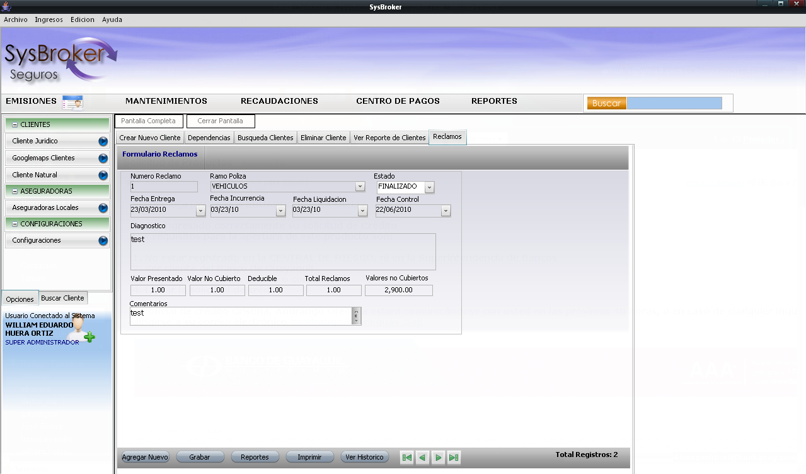
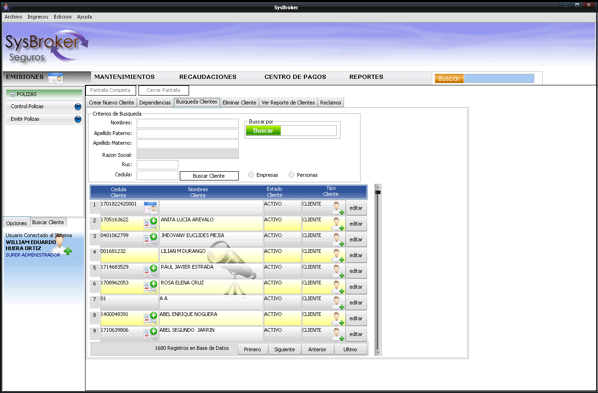

-
Software a Medida
-
SysBroker


Sysbroker:
Sistema para brokers de seguros, tecnologia cliente-servidor, con experiencia de usuario tanto Desktop, Web, Móvil, contiene los siguientes
módulos de gestión de negocio:
- Módulo de Seguridad
- Módulo de Gestión de clientes
- Módulo de Gestión de Pólizas de Seguros
- Módulo de Reportes
- Módulo de Alertas
Para información de nuestros servicios puede escribirnos al correo: info@mobilpymes.com